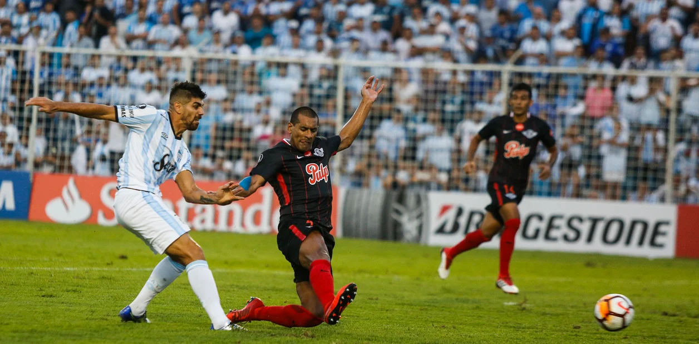
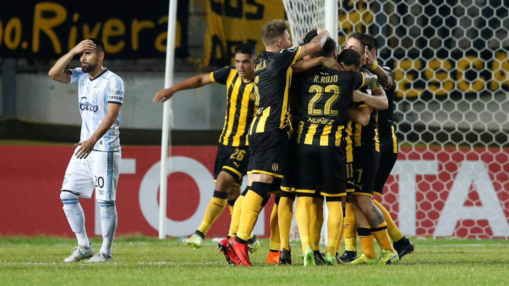
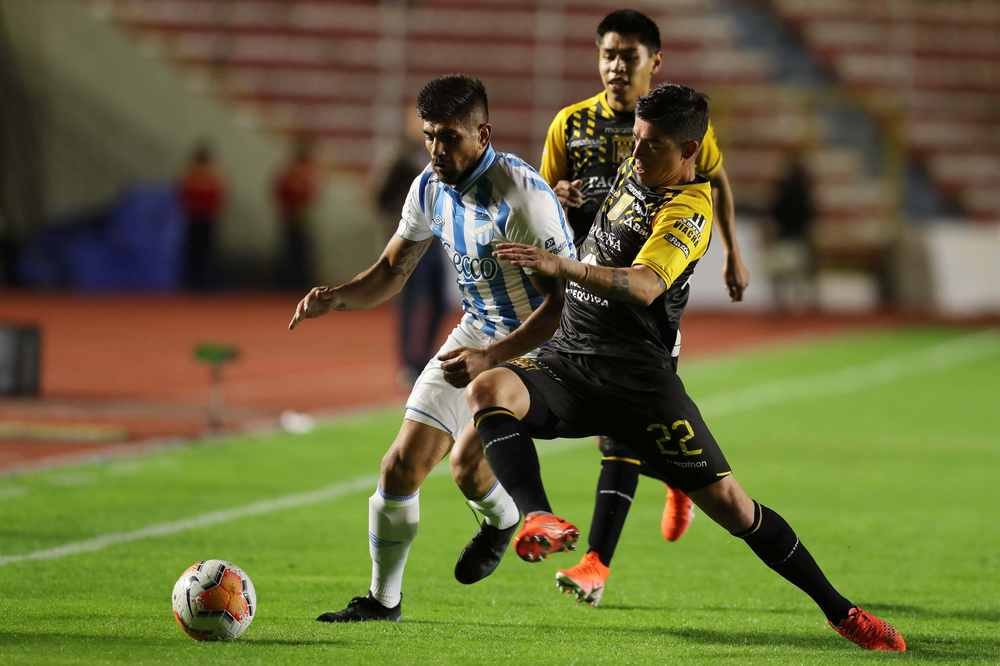
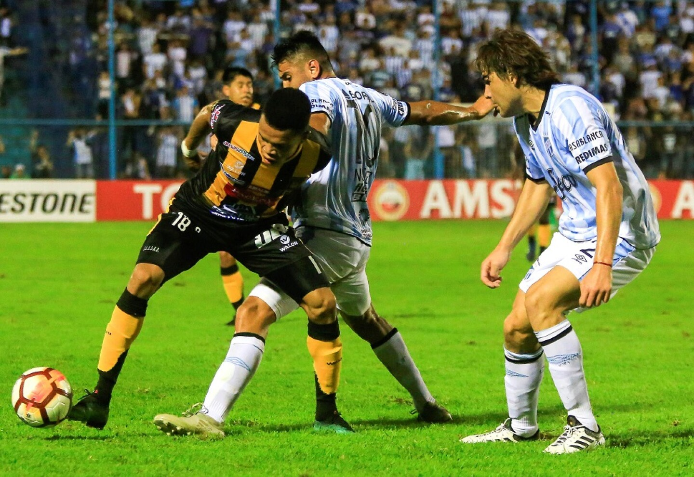
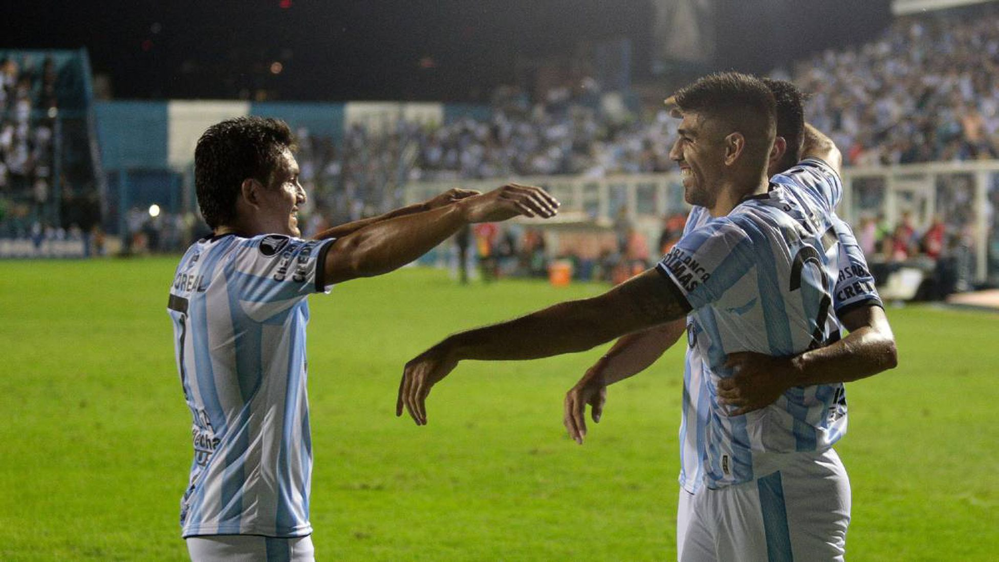
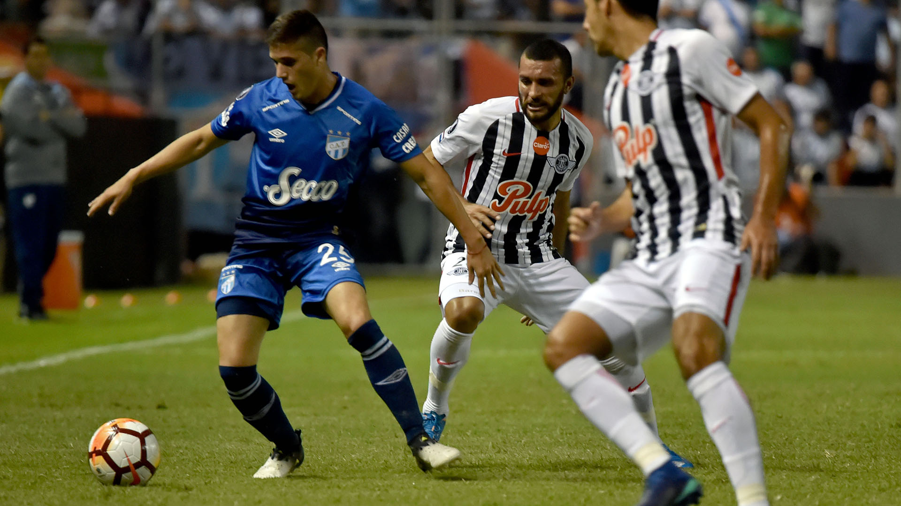
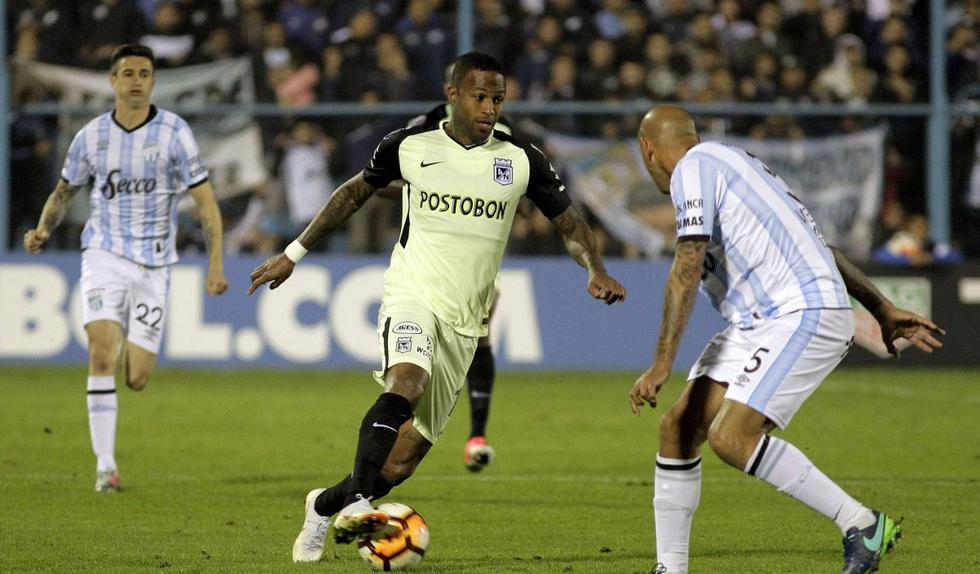
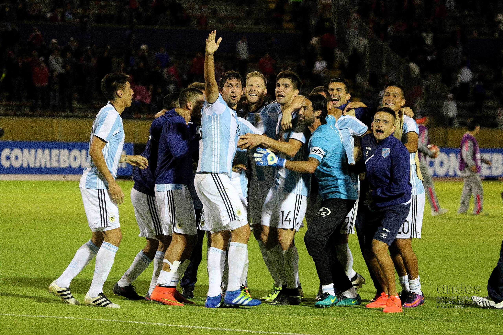
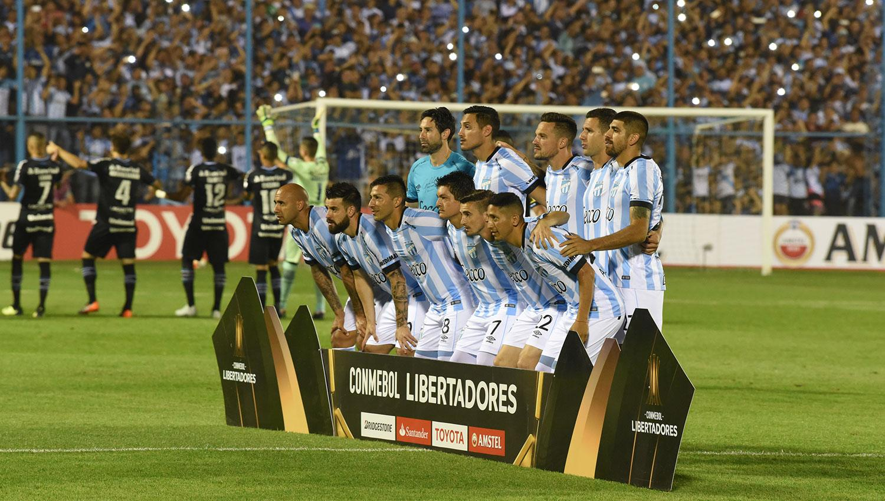
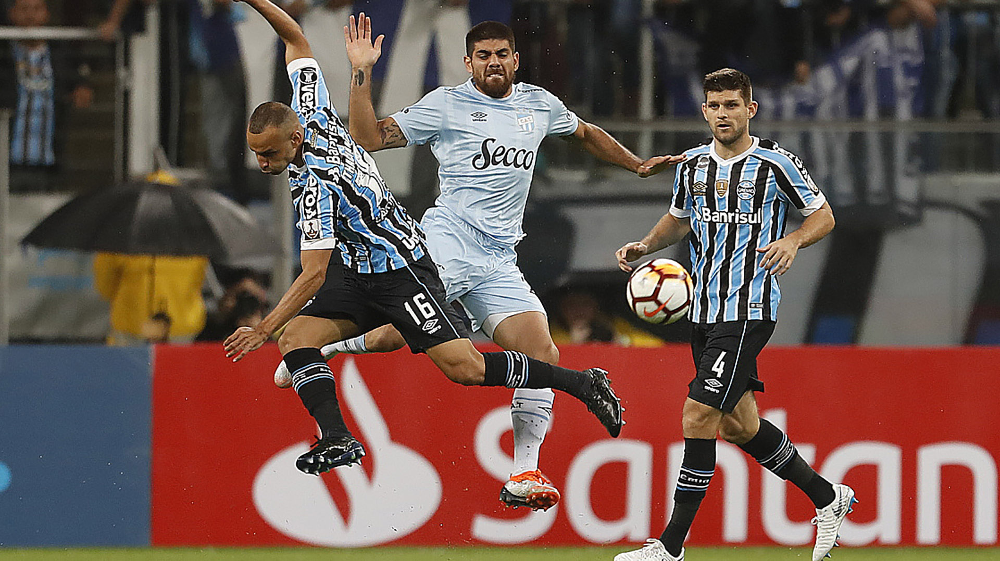

PRIMER PARTIDO
El primer rival de la fase de grupos de la Copa Libertadores 2018 fue Libertad de Paraguay. El partido se disputó en el estadio "Monumental" José Fierro el día 13 de marzo de 2018, a las 19:15hs, y sería un comienzo con el pie izquierdo para el equipo tucumano, fue derrota del Decano por 2 a 0. Los goles fueron anotados por Salcedo en el minuto 63' y el segundo por Alborno en el minuto 78'. El árbitro del encuentro fue Raphael Claus.


SEGUNDO PARTIDO
El segundo enfrentamiento del Decano sería en el país vecino de Uruguay, en la ciudad de Montevideo vs. Peñarol. El partido se programó para el día 4 de abril a horas 19:15. El encuentro fue dirigido por el brasilero Wilton Sampaio, donde fue nuevamente derrota del Decano pero esta vez por 3 tantos contra 1. El equipo uruguayo empezaría ganando el partido con goles de C. Rodríguez a los 10' (pen.) y luego Guillermo Acosta (e.c.) a los 50'. Luego el Decano descontaría con un gol de penal del "Pulga" Rodríguez a los 64', y a los 82' Rojo terminaría sentenciando el 3 a 1 final para el local.
TERCER PARTIDO
Llegaría la mitad de la fase de grupos jugando nuevamente de visitante, ésta vez tocaría en la altura de La Paz, contra el siempre dificil The Strongest, con la obligación de ganar o ganar y con toda la estadística en contra: 50 años llevaban los equipos argentinos sin poder ganar en La Paz. El encuentro fue dirigido por Julio Bascuñán y se disputó el día 18 de abril, donde sorpresivamente para muchos, fue victoria del Decano por 2 a 1. Con goles de Romat y Toledo para el equipo tucumano y Ibargüen habia empatado para el equipo boliviano. La ilusión volvía para toda la provincia del Norte argentino.


CUARTO PARTIDO
Una semana después era hora de recibir en Tucumán al equipo boliviano. The Strongest llegaría golpeado y el Decano con el ánimo y las ilusiones volando alto, y eso se reflejó en el campo de juego. Dirigo el encuentro por el brasilero Luiz de Oliveira, fue victoria nuevamente para los dirigidos por Ricardo Zielinski por 3 a 0, con goles de Leandro Díaz (30'), Gervasio Núñez (44') y "Pulga" Rodríguez (89'). La alegría era total y la provincia se ilusionaba cada vez más con estar entre los 16 mejores de América.
QUINTO PARTIDO
Con olor a revancha, tocaba recibir al gigante Peñarol en el "Monumental" José Fierro. Una victoria dejaría al equipo tucumano con muchas chances de quedar entre los dos primeros del grupo y clasificar. 2 de mayo, con el árbitro Sandro Ricci conduciendo el encuentro. El Decano pudo hacerse gigante contra el grande uruguayo y dejar los 3 puntos en Tucumán con un ajustado 1 a 0 anotado por Leandro Díaz a los 58'.


SEXTO PARTIDO
El primero contra el segundo del grupo. Un empate servía a ambos para mantener sus posiciones y clasificar a la siguiente instancia. A Libertad de Paraguay le tocaba recibir a Atlético en condición de local. Y como era de esperar, sin muchas llegadas pero con la expulsión del arquero tucumano, el encuentro terminó en un 0 a 0. Así desatando la alegría de toda la provincia y haciendo historia entre los clubes del interior del país. El Decano clasificaba entre los 16 mejores de América.
OCTAVOS DE FINAL - IDA
El sorteo no salía favorable para el Decano y tocaba recibir por la ida de los octavos de final al siempre fuerte colombiano Atletico Nacional. 9 de agosto, y todo era nervios en Tucumán, que luego de 7 minutos se transformó en alegría debido al primer gol de Leandro Díaz despues de un error del arquero Monetti. Promediando el segundo tiempo, Guillermo Acosta (71') estiraría la ventaja para el local y sentenciar un 2 a 0 histórico para el equipo tucumano.


OCTAVOS DE FINAL - VUELTA
28 de agosto a las 19:45 en Medellín, era la fecha y hora donde el Decano podría llegar a hacer historia a nivel nacional y ser el primer equipo del interior del país en pasar esa instancia del torneo internacional de mayor importancia a nivel clubes del continente. Dirigos por Roberto Tobar, contra un durísimo Atlético Nacional que terminó ganando ese encuentro por 1 a 0, el Decano consiguió clasificar y codearse con los otros 7 mejores de América.
CUARTOS DE FINAL - IDA
Tocaba recibir a un gigante de Brasil en Tucumán. 18 de septiembre. Gremio era el rival a enfretarse, pero el Decano soñaba con seguir haciendo historia. El partido empezó mal con la expulsión de Gervasio Nuñez mediante la intervención del VAR y ya todo fue cuesta arriba. Derrota del equipo tucumano por 2 a 0 con goles de Alisson (34') y Everton (54'), y ahora tocaba ir a Brasil a dar vuelta la situación.


CUARTOS DE FINAL - VUELTA
Arena do Grêmio, Porto Alegre, el 2 de Octubre del 2018. El Decano saldría con todo e intentaría revertir la situación. Cuando parecía estar al caer el primero del equipo tucumano, llegó el gol de Luan (35') y los ánimos del equipo parecían desmembrarse poco a poco. El encuentro dirigido por Roberto Tobar terminó con un contundente 4 a 0 a favor del local y así el Decano terminaba su participación en la Copa Conmebol Libertadores 2018, dejando una marca única e histórica para el norte del país.